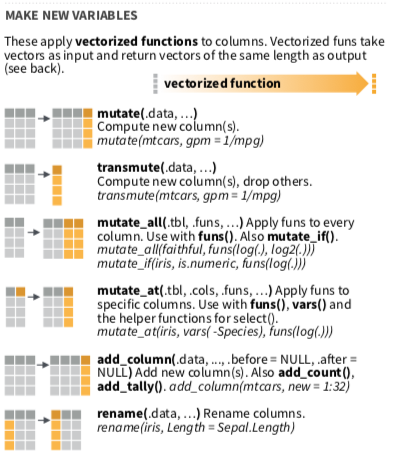

Chapter 6 從既有變數產生新變數mutate()
第一部分
第二部分

mutate/transmute，以及mutate+select組合技
和summary functions不同的是 : vectorized function，得到的還是一個vector(column vector)
mutate從既有變數中新增變數，有保留原始data.frame。
flights %>% mutate(total_delay = dep_delay + arr_delay)## # A tibble: 336,776 x 20
## year month day dep_time sched_dep_time dep_delay
## <int> <int> <int> <int> <int> <dbl>
## 1 2013 1 1 517 515 2
## 2 2013 1 1 533 529 4
## 3 2013 1 1 542 540 2
## 4 2013 1 1 544 545 -1
## 5 2013 1 1 554 600 -6
## 6 2013 1 1 554 558 -4
## 7 2013 1 1 555 600 -5
## 8 2013 1 1 557 600 -3
## 9 2013 1 1 557 600 -3
## 10 2013 1 1 558 600 -2
## # ... with 336,766 more rows, and 14 more variables:
## # arr_time <int>, sched_arr_time <int>,
## # arr_delay <dbl>, carrier <chr>, flight <int>,
## # tailnum <chr>, origin <chr>, dest <chr>,
## # air_time <dbl>, distance <dbl>, hour <dbl>,
## # minute <dbl>, time_hour <dttm>, total_delay <dbl>transmute從既有變數中新增變數，無保留原始data.frame。
flights %>% transmute(total_delay = dep_delay + arr_delay)## # A tibble: 336,776 x 1
## total_delay
## <dbl>
## 1 13
## 2 24
## 3 35
## 4 -19
## 5 -31
## 6 8
## 7 14
## 8 -17
## 9 -11
## 10 6
## # ... with 336,766 more rows- 要怎麼讓新產生的變數，排列到適當的相對位置，不然老是在最右邊？(mutate+select組合技)
#我想要讓total_delay，排在arr_delay的旁邊
flights %>% mutate(total_delay = dep_delay + arr_delay) %>%
select(year:arr_delay, total_delay, everything())## # A tibble: 336,776 x 20
## year month day dep_time sched_dep_time dep_delay
## <int> <int> <int> <int> <int> <dbl>
## 1 2013 1 1 517 515 2
## 2 2013 1 1 533 529 4
## 3 2013 1 1 542 540 2
## 4 2013 1 1 544 545 -1
## 5 2013 1 1 554 600 -6
## 6 2013 1 1 554 558 -4
## 7 2013 1 1 555 600 -5
## 8 2013 1 1 557 600 -3
## 9 2013 1 1 557 600 -3
## 10 2013 1 1 558 600 -2
## # ... with 336,766 more rows, and 14 more variables:
## # arr_time <int>, sched_arr_time <int>,
## # arr_delay <dbl>, total_delay <dbl>, carrier <chr>,
## # flight <int>, tailnum <chr>, origin <chr>,
## # dest <chr>, air_time <dbl>, distance <dbl>,
## # hour <dbl>, minute <dbl>, time_hour <dttm>範例
若完成，請直接貼到open chat
若有一位買家對於這32台車子很有興趣，特別是在省油表現（Miles/(US) gallon, mpg)，以及馬力表現(hp, Gross horsepower)有很大的興趣，你要整理哪些資料？
後來他希望能夠買到馬力性能比較強的車，他要求你將馬力表現高於平均的車款額外整理給他，應該怎麼做呢？
假設這位買家最近試駕了很多台車款，閒聊時候偶然跟你分享他獨家的選車know-how，標準是省油表現（Miles/(US) gallon,mpg)數字的十倍，再加上馬力表現的總和，越高越好，請問哪一台車應該是他的心頭好？
mtcars自主練習
- 休士頓火箭隊，隊伍中，本季每個人的場均得分(本季總得分(TotalPoints)/本季出賽場次(GamesPlayed))是多少？